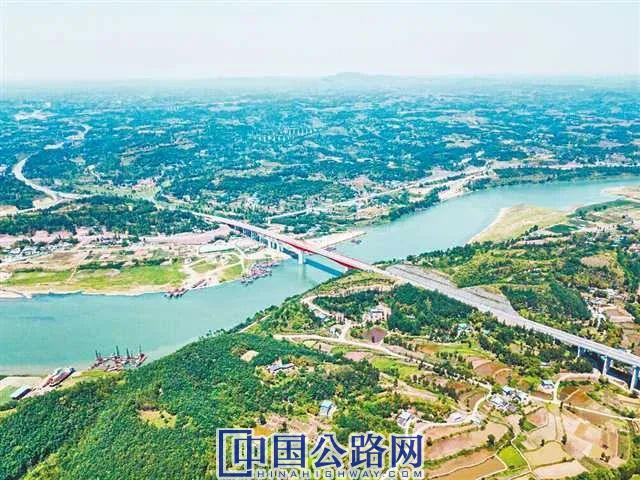
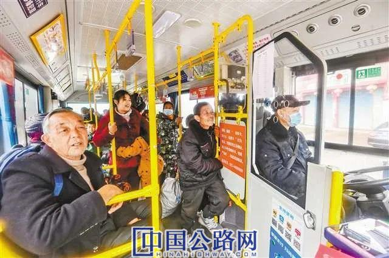
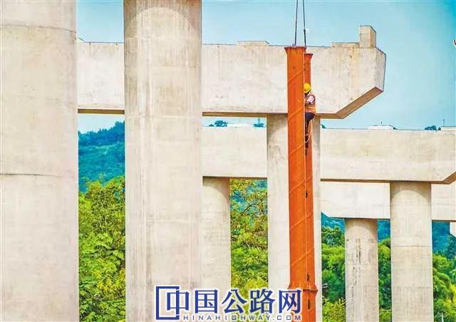

您好，欢迎来到中国高速公路网—21世纪公路网！
 作者：付爱农 杨永芹
来源：重庆日报
作者：付爱农 杨永芹
来源：重庆日报
 时间：2020-12-30
时间：2020-12-30
12月25日18时，随着一辆辆社会车辆有序通过合川小沔互通，渝广高速支线广安前锋至合川小沔段正式通车。这是重庆直辖以来，川渝两地交通部门联合开通的首条省际高速公路。由此，重庆通往广安的高速公路及干线公路达到5条。
无独有偶。永泸高速重庆段也已建成，至此重庆连通四川省产业大市泸州的高速公路也达到5条。
古语云：蜀道难，难于上青天。
而如今，川渝之间已建和在建高速公路达19条，成渝地区双城经济圈毗邻城市有望实现“高速公路1小时通达”。
市交通局负责人表示，随着重庆交通建设三年行动计划的实施，川渝之间交通基础设施互联互通加快推进，川渝两地正携手织密大交通网，为唱好“双城记”、建好“经济圈”铺就发展大通道。

2019年底，川渝间省际大通道潼荣高速建成通车，潼南至荣昌车程由2个多小时缩短至1个小时。中铁建重庆
“补短”“加密” 高速公路串起巴山蜀水
合川区小沔镇始建于明朝，曾名为“小里场”。虽然建镇年代久远，但名头并不响亮，直到重庆开始实施交通建设三年行动计划，小沔互通成为重庆与广安等地之间重要的交通节点，“小沔”这个不太起眼的地名才开始为人熟知。
渝广支线高速通车后，小沔到广安市区及华蓥市仅需40分钟左右，将极大推动合川与广安沿线红色旅游发展。
以高速公路为“主打”，重庆与周边地区的交通互联互通正不断“补短板”“加密度”。翻开重庆高速公路建设图会发现，截至今年底，重庆与周边省区市的高速公路通道已建成24条，其中通往四川的有14条。

12月5日，潼南区双江镇界桥公交站，市民乘坐潼南城区-遂宁磨溪的跨省城际公交车。记者 龙帆 摄/视觉重庆
唱好“双城记”，建好“经济圈”。今年1月3日中央财经委员会第六次会议提出成渝地区双城经济圈战略布局，川渝两地高速公路建设进一步加快步伐，两地间高速公路省际通道建设、射线高速公路扩能改造等按下“快进键”，创下多个第一。
今年6月29日，重庆通向四川方向的3条高速公路同时开建，分别是渝武高速公路扩能北碚至合川段、铜安（重庆铜梁至四川安岳）高速重庆段、江泸（重庆江津至四川泸州）北线高速。
渝武高速扩能北碚至合川段建成后，将极大缓解渝武高速的拥堵状况；铜安高速重庆段建成后，铜梁到安岳的车程将由90分钟缩短至约40分钟；江泸北线重庆段建成后，从江津到泸州的车程将由90分钟缩短至50分钟。
“通往四川方向的高速公路同时开建3条，这是第一次。”市交通局相关负责人说。
12月7日，在川渝交界处的四川省开江县任市镇，重庆市交通局、四川省交通运输厅联合举行梁开高速（重庆市梁平区至四川省达州市开江县）开工活动。
“这是川渝两地首次联合开工省际高速公路。”市交通局相关负责人表示，梁开高速是强化川渝高速公路互联互通、融入成渝地区双城经济圈建设、促进万（万州）达（达州）开（开州）川渝统筹发展示范区一体化发展的重要省际通道，项目建成后，将辐射重庆市梁平区及四川省达州市开江县、达川区的20余个乡镇，沿线150多万群众将受益。
来自市交通局消息称，重庆交通建设三年行动计划期间，连接四川省泸州市、南充市的潼荣高速已于2019年建成通车；今年底，永泸高速、渝广支线建成通车；明年，预计合安高速（重庆合川至四川安岳）重庆段、大内高速（重庆大足至四川内江）重庆段也将建成通车……川渝两地间高速公路网正在越织越密，两地居民也越走越近。

8月11日，大足区大内高速黄桥枢纽互通施工现场，工人加紧作业。记者 龙帆 摄/视觉重庆
惠民生 “以前上高速起码半小时，如今只要三五分钟”
12月12日10时许，潼南区潼梓街道祁佛社区，几辆私家车陆续启动，一大家子人准备赶往荣昌的亲戚家吃酒席。“中午12点前肯定能到！”一位负责开车的男士说，以前开车到荣昌起码2个多小时，如今走潼荣高速1小时左右就到了。
祁佛社区位于潼荣高速潼南南收费站下道口附近，开车三五分钟就可以上高速。
“别看祁佛社区处在潼南城区内，其实比较偏远。以前开车上高速需绕行国道，从渝遂高速潼南站上道，至少半小时；到四川安岳走老路，需两个半小时；即使到潼南城区，也要1小时左右。”祁佛社区支部书记杜国民说，自从2019年底潼荣高速通车后，到安岳车程仅1个半小时，到重庆中心城区70分钟。
“潼荣高速潼南段长约75公里，贯穿潼南区11个镇街，辐射人口约70万，沿线镇街均可实现20分钟以内上高速。”潼南区交通局负责人表示。
受益的，当然不只是重庆市民。泸州市交通局负责人称，潼荣高速四川段将服务沿线80万群众出行，并大大提升了泸州港和机场的辐射范围，成为四川泸州与广安、重庆永川等地互联互通的快速通道。
潼荣高速公路是重庆交通建设三年行动计划的重要项目之一，起点为重庆市潼南区与四川省遂宁市交界处的楠木湾，终点为荣昌区清江镇梧桐寺，全长138公里，在重庆市境内纵贯大足、潼南和荣昌三个区。
“更重要的是，这条高速与四川南充、泸州相连，并与沪蓉高速、成渝环线、渝蓉高速、渝昆高速、合安等多条高速公路接驳，形成成渝地区双城经济圈内及川渝对内对外开放发展的大通道。”负责潼荣高速运营的中铁建重庆投资集团相关负责人说。
促产业 “以前不敢接的业务，现在敢接了”
当下正是蜜柚销售旺季。潼荣高速的开通，让重庆伟富农业有限公司董事长杜劲特别高兴——
荣昌区潼荣高速安富广顺出入口。记者 龙帆 摄/视觉重庆
该公司的蜜柚基地位于祁佛社区，主要销往周边乡镇、潼南城区及重庆中心城区等地。以前，即便只是拉货到邻近的潼南区塘坝镇，也要耗时1个多小时，每车物流费约300元；现在走潼荣高速，车程仅十几分钟，每车物流费降至约100元。
道路更畅通，百业更兴旺。潼荣高速2019年底通车，位于该高速公路重要节点处的祁佛社区，2020年新增3家企业入驻。目前，潼南区规划在祁佛社区新建物流园区，打造万亩茶园康养地。
对于处在成渝地区双城经济圈的川渝企业来说，目前在建的合安高速也备受期待。
这段时间，重庆翔展建筑工程有限公司总经理舒建翔正与来自四川省南充市、遂宁市的企业洽谈业务。
“建筑企业对运输成本比较敏感。以前，来自四川邻近地区的很多业务都没敢接；明年，合安高速将全线通车，到遂宁只要40分钟左右，到南充也由两个半小时缩短至一个半小时，采购建材等成本会大大降低，接四川业务的底气更足了。”舒建翔说。
合安高速是成渝两地间一条重要的省际通道，也是连接成都天府新区与重庆两江新区、成都天府国际机场与重庆江北国际机场最便捷快速的直达通道。明年全线建成后，重庆合川到四川安岳车程仅1小时，重庆两江新区到成都天府新区全程仅需2.5小时左右。合安高速建设，将为沿线产业发展带来新机遇——
重庆市潼南区、大足区与四川省安岳县交汇地带，是我国有名的柠檬产区。未来，三个区县将由政府搭台、企业唱戏、专家助力，打造中国柠檬产业“金三角”，包括面积达百万亩的柠檬产区、柠檬精深加工产业等，共同提升川渝柠檬产业在国内外的竞争力。
据了解，川渝三个区县做大做强做优柠檬产业，既有合作的基础，也各有优势：比如安岳柠檬，种植历史悠久、技术成熟，品牌影响力也较强；而潼南柠檬具有一定的后发优势，可在精深加工、科技研发等方面重点发力。
伴随着一条条高速公路建成通车或在建、开工，成渝地区双城经济圈内一条条“产业走廊”同步向远方延伸。江津区也对今年已经开工建设的江泸北线高速公路充满期待。
江津区政府相关人士表示，将以这条高速公路为契机，推动江津与毗邻地区共同打造两个国家级“金三角”，即中国名牌白酒“金三角”和中国康养旅游“金三角”；同时，培育宜宾五粮液—泸州老窖—江津江小白—贵州茅台等酿酒文化工业旅游精品线路，打造“长江上游酒文化工业旅游”品牌；利用重庆影视城（江津白沙）相对成熟的影视文化资源，向泸州、宜宾延伸打造“成渝沿江影视文旅产业带”。
数读公路网建设
3400公里
到2020年底，我市新开工高速公路项目超1000公里，全市高速公路通车总里程达到3400公里，省际出口通道从13个增加到24个。
1万公里
到今年底，我市普通干线公路完工1万公里，国道二级及以上、省道三级及以上占比分别达到90%、70%。到2022年，川渝间9条普通国道达到二级标准、8条普通省道达到三级及以上标准。
建成高速通道14条
分别是渝泸（泸州）、成渝、渝蓉、渝遂（遂宁）、渝武（武胜）、渝邻（邻水）、垫（垫江）忠（忠县）、梁（梁平）忠（忠县）、开（开州）开（开江）、渝广（广安）、潼（南）荣（昌）高速（南北计2个通道）、渝广（广安）支线和永川-泸州高速。
在建高速通道5条
渝泸北线、大足至内江、铜梁至安岳、合川至安岳高速和梁平至开江高速。
【编辑：王珏 QQ：1485994861；TEL：13810405128/010-84990788—1369】
【审核：耿茁、孙婧】
 微信公众号
微信公众号
 微信订阅号
微信订阅号